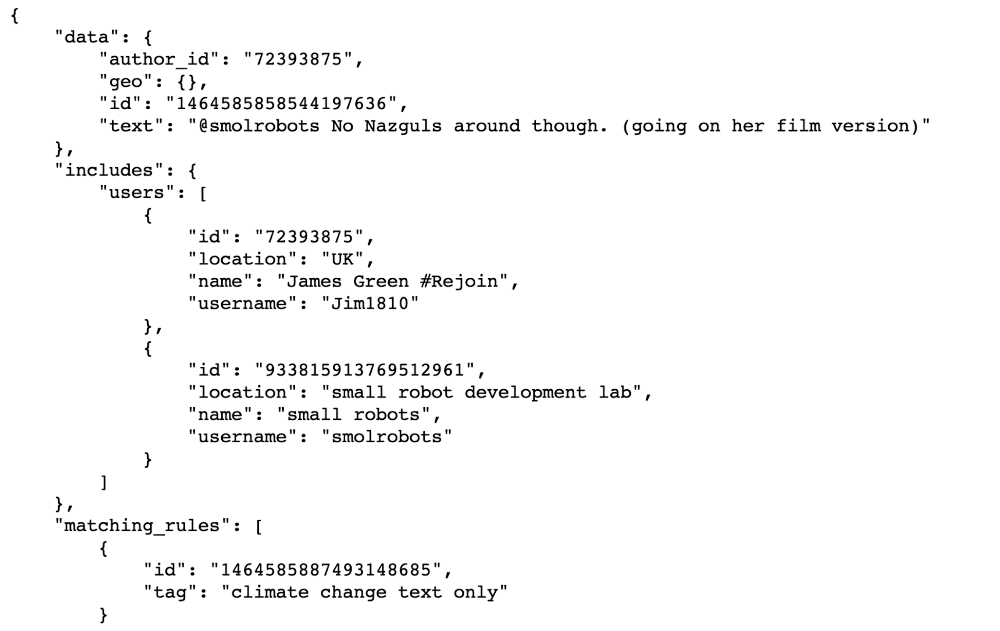

REAL-TIME DATA STREAMING PIPELINE FOR TWEETS
This is a group project I worked on for the Master of Information and Data Science (MIDS) - Fundamentals of Data Engineering course at UC Berkeley.
Teammates: Mili Gera, Matt Whittaker, Heesuk Jang.
Links: [Slide Deck], [Report Notebook], [Git Repo]
Skills Demonstrated
- Constructing data pipelines for real-time data streaming.
- Utilizing Docker to containerize and deploy software components.
- Integrating external application programming interfaces (APIs) into data workflows.
- Comprehensive documentation of the project and managing GitHub repositories.
- Creating informative vizualizations to derive meaningful business insights.
Technologies: GCP, Docker, Kafka, Spark, Hadoop, Presto
Overwiew
In this project, our team built a data pipeline on Google Cloud Platform (GCP) to stream real-time tweet data for the purpose of data analysis, visualization creation, and addressing relevant inquiries. We connected to the Twitter API to receive climate change related tweets via Kafka, employed Spark to ingest and transform the Kafka messages, subsequently storing them in the Hadoop Distributed File System (HDFS). Utilizing Presto as our SQL platform, we conducted data queries to address key questions pertaining to climate change. Docker was used for efficient service containerization.
Approach
- Motivation: This project aims to collect and analyze real-time climate change-related tweet data from Twitter, recognizing its global significance. Understanding public sentiments and opinions on climate change is crucial, given its status as one of the most pressing global challenges. By building a data pipeline for efficient data collection and analysis, we seek to provide valuable insights for political entities, environmental organizations, and corporations interested in this critical issue.
- Data: Data for this project is sourced from the Twitter API, accessible upon approval of a developer account. Users receive an authentication token for access and connect to the API via a designated URL. Two key parameters, "rules" and "fields," govern this API connection. "Rules" serve to filter tweets based on specified criteria like phrases or hashtags, while "fields" determine the attributes of retrieved tweet objects, including ID, text, author name, and engagement metrics (likes, retweets, comments). Tweets are received in a nested JSON format.
- Pipeline:
- Containerization and Deployment: A Docker Compose file orchestrates containerization for each of the components of the pipeline. This entire data pipeline was deployed on Google Cloud Platform (GCP).
- Streaming data: Data from the Twitter API is accessed via the a python script, requiring a developer account and Bearer Token. The script specifies rules and fields for the Twitter stream, allowing customization based on phrases, hashtags, or specific accounts. It logs received messages to Kafka using a Kafka Producer.
- Data Transformation: A python script is used to run a Spark job. It ingests messages from the Kafka topic in a streaming fashion, transforms them into a Spark DataFrame using a predefined schema, and writes both raw and transformed data tables to HDFS as Parquet files. The script also extracts hashtags and URLs from tweet text, adding them as additional columns to the Hadoop table.
- Querying: To query the data, we create an external table using Hive in a Jupyter notebook. This notebook establishes a connection between Presto and the HDFS-stored data. We use Pandas to convert tables into DataFrames, facilitating the creation of visualizations to address project-specific questions.
